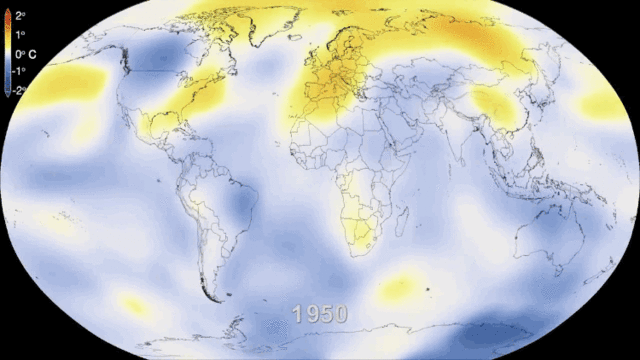

Climate Cange In Arctic

Since the Industrial Revolution, human use of fossil fuels such as oil and natural gas has led to the accumulation of greenhouse gases represented by carbon dioxide in the atmosphere. This has caused global warming. As the coldest Arctic region on the planet, global warming has twice as much impact as other regions. From the moving picture, we can clearly see the temperature rise in the Arctic in recent years. This caused the glacier to melt far faster than it could freeze again. According to research "The blanket of ice over Greenland covers nearly 1.68 million square kilometers (650,000 square miles) and is 3km (1.86 miles) thick in some places ... If all the ice on Greenland were to melt and gush into the ocean, global sea levels would rise about 7m (23ft). ". (Newsdeeply) And, the melting sea ice will expose the dark ocean, which will absorb more sunlight and cause further warming.
Bibliography
“Environmental Change — Background — Arctic Deeply.” Newsdeeply, www.newsdeeply.com/arctic/background/environmental-change. Accessed 7 Feb. 2020.
Melting Glaciers And Polar Bears

The melting of arctic glaciers has intuitively affected the ecological environment of Arctic life. As the hegemon in the Arctic ecosystem, polar bears are also deeply affected. According to research, fewer than 20,000 polar bears remain on the planet. Polar bears are now facing extinction. The two biggest reasons are that they seem to be at the top of the Arctic Circle food chain. However, their reproduction rate is extremely low, and usually, there is only one polar bear per litter. Second, they also have a single food requirement. They usually only eat seals that rely on ice. The melting of glaciers has led to a reduction in the number of seals, which has affected polar bears, making them scared of jealousy. Even facing starvation without food. In order to survive, polar bears have only two choices, to stay on the ice and continue searching or to explore the sea to find food. The ocean is the most unfathomable place. Most of the polar bears died on the way to seek food because of physical weakness and the inability to return to land. The truth of ridicule is that most of the polar bears who are kings of the Arctic died of hunger.
This situation is caused by human activities. The Earth experienced the extremely cold Ice Age and also experienced the extremely warm Cretaceous. However, just as forests experience natural fires does not mean that humans are allowed to set fire artificially. Human beings need to reflect on and improve their behavior. It's not too late if you want to change. What we need and need most now is to use absolute carbon. Just like Yorkshire Wildlife Park wants to tell us it's time to make adjustments to human agriculture, energy and water systems. Do our best to use green energy systems to achieve green policy protection. Many things seem troublesome but only need to start with the slightest actions around us. For example, try not to use plastic products, such as plastic bags and plastic lunch boxes; try to use green energy to travel, such as using battery cars and public transportation systems. These can reduce our carbon footprint.
Bibliography
Ellis, Samantha. “Climate Change In Alaska Threatens Polar Bears.” Global Animal, 20 Dec. 2016, www.globalanimal.org/2010/12/09/climate-change-in-alaska-threatens-polar-bears/26285/?gclid=Cj0KCQiAsvTxBRDkARIsAH4W_j-bIVpNTQTOHlnR1FiR3bCw3XJWiIvPqElYmrmgTd1585aLwtxIyoUaAr9KEALw_wcB.
Yorkshire Wildlife Park. “Polar Bears & Climate Change.” YouTube, uploaded by Yorkshire Wildlife Park, 26 Feb. 2016, www.youtube.com/watch?v=LtibE0tm5t8&feature=youtu.be.